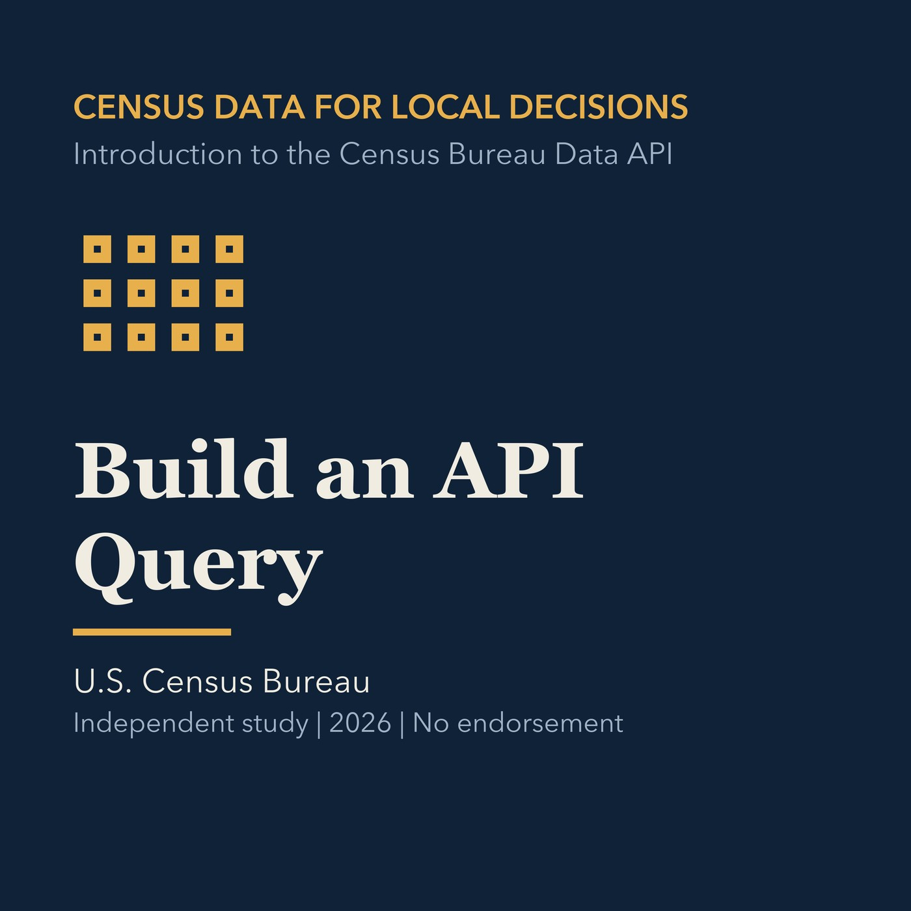

EPISODE 07
Build a Reproducible API Query
Constructs Census API requests from year, dataset, variables, and geography.

- Stable GUID
1f0de947-bccd-5145-bce3-86e9dae74b20- Release
- census-academy-v2026.2
- SHA-256
4dd3449f64b31eb6e9fd4636a6c9ea3c1804a2047a8f720e42dec1e75858729d